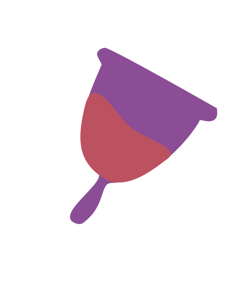
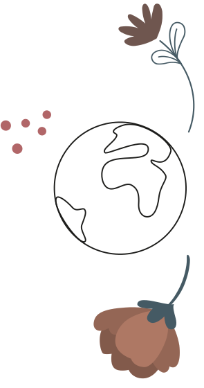
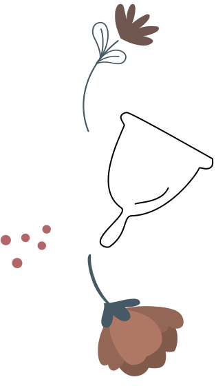
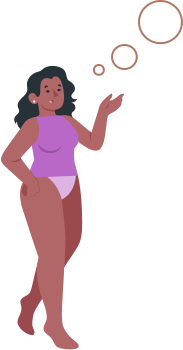

Cup
Petite coupelle que l’on insère dans le vagin, qui récolte le sang, qui se retire comme un tampon à l’aide de la tige.
Avantages
Peut se porter 8H à 12H
Écologique
N’assèche pas le vagin
Discret
Inconvénients
Il faut un certain temps d’adaptation
Complexe pour les flux abondant
Il faut la désinfecter et la stérilisée, à chaque cycle
Peut être difficile à mettre
Durée dans le temps
5 ans
 Tips vidéos
Comment utiliser celles-ci
Comment l'entretenir
Où les acheter et à quel budget ?
Pharmacie ● Budget de 15€ à 32€
Ils proposent des cups de différentes tailles de 0 à 3 allant de la jeune fille à la femme adulte. Certaines sont même vendues avec un stérilisateur.
Supermarché, Action, DI ● Budget de 3€ à 34€
Certains supermarchés, magasins de beauté, vendent des cups, mais ils ne proposent bien souvent pas toutes les tailles, ni même de stérilisateur.
Site web ● Budget de 27€ à 45€
Mooncup et intimina proposent des cups, disponibles en 2 tailles différentes, en fonction de de votre flux ou si vous avez déjà eu un enfant par voie basse ou non, ainsi que de votre âge.
Ils proposent aussi des packs composés de 3 à 5 culottes qui peuvent varier de 60€ à 260€.
Intima proposent différentes formes et même des cups repliables pour qu'elles soient encore plus discrètes.
Acheter local ● Budget 34,95€
Loca gigi , marque belge éco responsable, qui propose 2 cups en fonction de ton âge, ainsi que de ton col et si tu as déjà eu un enfant.
Mais ce n’est pas tout, ils vendent un stérilisateur écologique et économique qui peut se prendre partout , car il suffit juste de le remplir d’eau et le mettre au micro-onde pour laver et stériliser votre cup.
Comment ça se passe dans le monde ?
Savais-tu que les protections périodiques réutilisables comme la culotte de règles seront remboursées dès 2024 par la sécurité sociale en France !
 Témoignages
J’utilise des serviettes hygiéniques car c’est ce moyen de protection que ma maman m’a donné lors de mes premières règles. Je l’utilise par habitude. Lisa 24 ans
Je préfère porter cette protection, car c'est celle qui me convient le mieux et qui me gêne le moins. Par contre, c'est complexe à utiliser quand je ne suis pas chez moi. Emilie, 24 ans